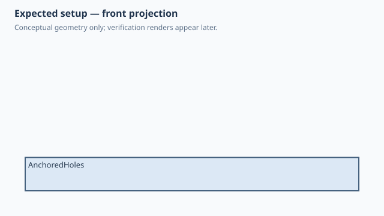

← Qualification / Face-relative hole pattern
Forge qualification case
NOT RUNQ1 Q2 documented
Face-relative hole pattern
1. Test setup

Test goal
Verify a 2D profile, native extrusion, patterned holes and placement on a selected face.
Pass criteria
One plate with two through holes at the requested Y spacing and no feature errors.
2. Implementation under test
Fixture source
@dataclass
class AnchoredHoles:
"""Two through holes, each 20 mm from the center along the Y axis."""
width: float = 100
depth: float = 60
thickness: float = 10
spacing: float = 40
def build(self):
with Sketch(name="Base", plane="XY") as sketch:
Rectangle2D(self.width, self.depth)
plate = sketch.extrude(self.thickness)
holes = Hole(d=8, depth=Depth.THROUGH_ALL).pattern(
count=2, spacing=self.spacing, axis=Axis.Y
).on(plate, face=Faces.TOP)
plate + holes
AnchoredHoles()
Public Forge API used
with Sketch(plane='XY'): Rectangle2D(...); sketch.extrude(...); Hole(...).pattern(...).on(..., face=Faces.TOP)
Forge model represented by this fixture
A feature-based plate plus a patterned Hole feature anchored to the plate's TOP face.
3. Generated SolidCraft relationship
Native sketch/extrude commands followed by native hole/pattern placement commands; Forge does not subtract hand-built cylinders.
Show generated relationship / command details
parameters.add
parameters.add
parameters.add
parameters.add
sketch.create
sketch.rectangle.two_point
sketch.finish
solid.extrude
sketch.create
sketch.circle.center
sketch.circle.center
sketch.finish
solid.extrude3. Results
Native result data was not supplied to this site build. Run the native qualification for measured results.
No source-matched native verification was supplied to this site build. The case sheet and command contract are still shown.
6. Evidence and references
Raw evidence
Show generated files and measurements
Reference models
These comparisons clarify concepts; Forge does not promise API compatibility with them.
- OpenSCAD: Comparable geometry would normally use difference() and repeated cylinders; Forge intentionally prefers SolidCraft hole features.